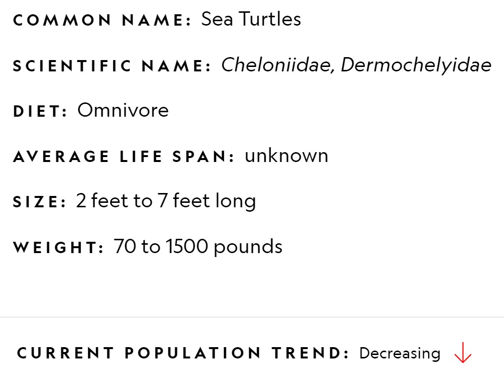

OVERVIEW
Sea turtles (superfamily Chelonioidea), sometimes called marine turtles, are reptiles of the order Testudines and of the suborder Cryptodira. The seven existing species of sea turtles are the green sea turtle, loggerhead sea turtle, Kemp's ridley sea turtle, olive ridley sea turtle, hawksbill sea turtle, flatback sea turtle, and leatherback sea turtle. All six of the sea turtle species present in U.S waters (loggerhead, green sea turtle, hawksbill, Kemp's ridley, olive ridley, and leatherback) are listed as endangered and/or threatened under the Endangered Species Act. The seventh sea turtle species is the Flatback, which exists in the waters of Australia, Papua New Guinea and Indonesia. Sea turtles can be separated into the categories of hard-shelled (cheloniid) and leathery-shelled (dermochelyid). There is only one dermochelyid species which is the leatherback sea turtle.
DISTRIBUTION AND HABITAT
Sea turtles can be found in all oceans except for the polar regions. The flatback sea turtle is found solely on the northern coast of Australia. The Kemp's ridley sea turtle is found solely in the Gulf of Mexico and along the East Coast of the United States. Sea turtles are generally found in the waters over continental shelves. During the first three to five years of life, sea turtles spend most of their time in the pelagic zone floating in seaweed mats. Green sea turtles in particular are often found in Sargassum mats, in which they find food, shelter and water Once the sea turtle has reached adulthood it moves closer to the shore. Females will come ashore to lay their eggs on sandy beaches during the nesting season. Sea turtles migrate to reach their spawning beaches, which are limited in numbers. Living in the ocean therefore means they usually migrate over large distances. All sea turtles have large body sizes, which is helpful for moving large distances. Large body sizes also offer good protection against the large predators (notably sharks) found in the ocean. As a result of the COVID-19 virus, human activity on all beaches has virtually ceased, resulting in an increase in sea turtle nesting. In Thailand, the highest number of nests in the last 20 years have been found during 2020. Turtles are thriving across the United States as well, as there is less noise and pollution
DIET
The loggerhead, Kemp's ridley, olive ridley, and hawksbill sea turtles are omnivorous their entire life. Omnivorous turtles may eat a wide variety of plant and animal life including decapods, seagrasses, seaweed, sponges, mollusks, cnidarians, Echinoderms, worms and fish. However, some species specialize on certain prey. The diet of green sea turtles changes with age. Juveniles are omnivorous, but as they mature they become exclusively herbivorous. This diet shift has an effect on the green sea turtle's morphology. Green sea turtles have a serrated jaw that is used to eat sea grass and algae. Leatherback sea turtles feed almost exclusively on jellyfish and help control jellyfish populations. Hawksbill sea turtles principally eat sponges, which constitute 70–95 % of their diets in the Caribbean.
Threats
The IUCN Red List classifies three species of sea turtle as either "endangered" or "critically endangered" the most significant and contemporary threats to sea turtles comes from bycatch due to imprecise fishing methods Light pollution from beach development is a threat to baby sea turtles; the glow from city sources can cause them to head into traffic instead of the ocean. major threat to sea turtles is the black-market trade in eggs and meat. This is a problem throughout the world, but especially a concern in China, the Philippines, India, Indonesia and the coastal nations of Latin America. Another danger to sea turtles comes from marine debris, especially plastics.

Carcass of 75-feet blue whale washes up on beach in Indonesia